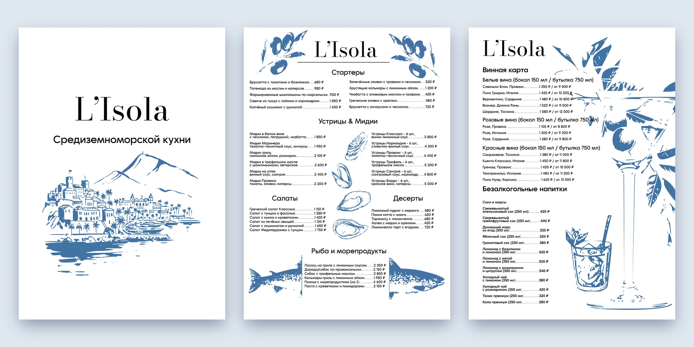
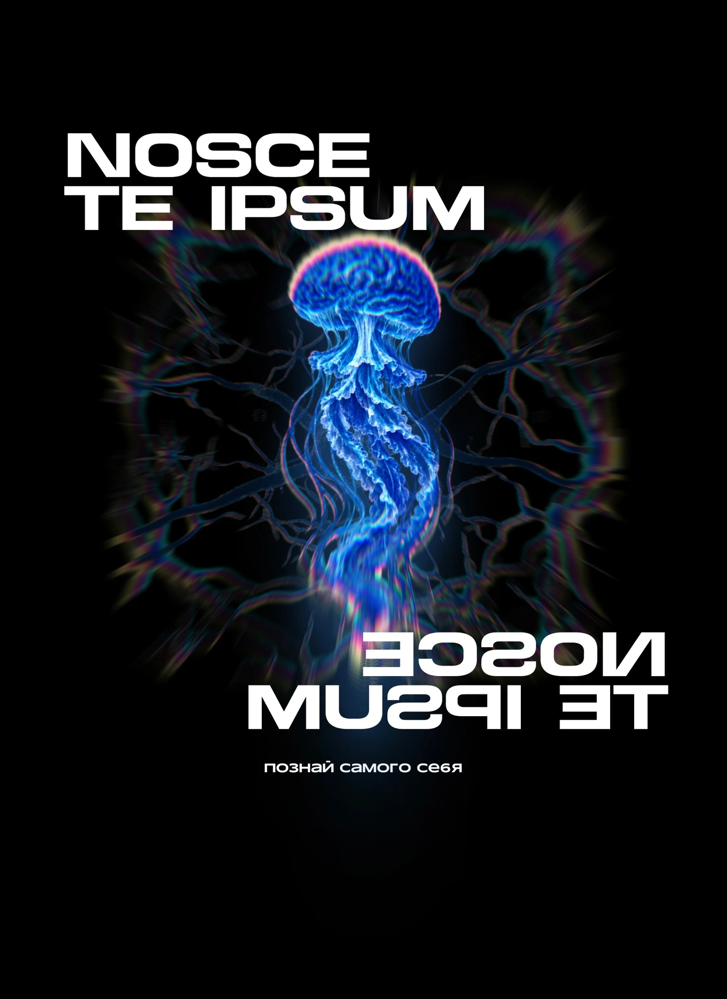

<!doctype html>
<html lang="ru">
<head>
<meta charset="utf-8">
<meta name="viewport" content="width=device-width, initial-scale=1, viewport-fit=cover">
<title>oatline</title>
<meta name="claude:viewport-fit-sides" content="cover">
<meta name="description" content="oatline — визуальные концепции брендов и сайты с продуманным пользовательским опытом.">
<link rel="icon" type="image/png" sizes="32x32" href="img/favicon-32.png">
<link rel="apple-touch-icon" href="img/apple-touch-icon.png">
<meta name="theme-color" content="#0E0E10">
<meta property="og:type" content="website">
<meta property="og:title" content="oatline — веб и графический дизайн">
<meta property="og:description" content="Визуальные концепции брендов и сайты с продуманным пользовательским опытом.">
<meta property="og:url" content="https://oatline.github.io/">
<link rel="canonical" href="https://oatline.github.io/">
<meta property="og:image" content="https://oatline.github.io/img/og.jpg">
<meta property="og:image:width" content="1200">
<meta property="og:image:height" content="630">
<meta name="twitter:card" content="summary_large_image">
<link rel="preconnect" href="https://fonts.googleapis.com">
<link rel="preconnect" href="https://fonts.gstatic.com" crossorigin>
<link rel="stylesheet" href="https://fonts.googleapis.com/css2?family=Onest:wght@400;500;600&family=Unbounded:wght@400;500;600&display=swap">
<style>
/* Layout: a quiet index. One hairline runs under the header and rules every project row; the work carries the colour. */
:root{
  --bg:#0E0E10; --surface:#18171A; --ink:#ECEAE4; --muted:#8F8C86; --line:#26252A; --accent:#B03442; --on-accent:#F3F1EC; color-scheme:dark;
  --stage:#0E0E10; --stage-ink:#F3F1EC; --stage-line:#2A2A2E; --sand:#CBBCB0; --iris:#B8424D; --lash:#E6DBCF; --tag:#6E2228; --glow:rgba(122,29,42,.5); --accent-hot:#C9434E; --serif:"Bodoni Moda","Didot","Bodoni 72",Georgia,serif;
  --display:"Unbounded","Arial Black",system-ui,sans-serif;
  --body:"Onest",system-ui,-apple-system,"Segoe UI",sans-serif;
  --gut:max(16px,env(safe-area-inset-left,0px));
  --gutr:max(16px,env(safe-area-inset-right,0px));
}
*{box-sizing:border-box}
body{background:var(--bg);color:var(--ink);font:400 16px/1.6 var(--body);-webkit-font-smoothing:antialiased}
body::before{content:"";position:fixed;inset:0 0 auto;height:env(safe-area-inset-top,0px);z-index:10;background:var(--bg)}
a{color:inherit}
img{max-width:100%;display:block;height:auto}
.wrap{max-width:1240px;margin:0 auto;padding-left:var(--gut);padding-right:var(--gutr)}
:focus-visible{outline:2px solid var(--accent);outline-offset:3px}

header.top{position:sticky;top:env(safe-area-inset-top,0px);z-index:5;background:var(--bg);border-bottom:1px solid var(--line)}
header.top .wrap{display:flex;align-items:center;justify-content:space-between;gap:16px;padding-block:18px}
.logo{font:500 18px/1 var(--display);letter-spacing:-.01em;text-decoration:none}
.logo{display:inline-flex;align-items:center;gap:9px}
.logo-eye{width:34px;height:auto;flex:none;overflow:visible;fill:none;stroke:currentColor;stroke-width:9;stroke-linecap:round;stroke-linejoin:round;margin-top:-2px}
.logo-eye .dt{fill:currentColor;stroke:none}
.logo-eye .lw{fill:none;stroke-width:10}
.logo-eye .li{fill:#7A1F2A;stroke:none}
.logo-eye .lu{fill:currentColor;stroke:none}
.logo-eye .lid{transform-box:view-box;transform-origin:200px 162px}
.logo:hover .logo-eye .lid{animation:logoBlink .45s ease-in-out}
@keyframes logoBlink{45%{transform:scaleY(.08)}}
@media (prefers-reduced-motion:reduce){.logo:hover .logo-eye .lid{animation:none}}
nav{display:flex;gap:24px;font-size:14px}
nav a{text-decoration:none;color:var(--muted)}
nav a:hover{color:var(--ink)}

.hero{padding-block:clamp(56px,10vw,120px) clamp(40px,6vw,72px)}
.hero h1{font:500 clamp(30px,5.4vw,68px)/1.08 var(--display);letter-spacing:-.025em;margin:0;max-width:17ch;text-wrap:balance}
.hero h1 em{font-style:normal;color:var(--accent)}
.hero-row{display:flex;flex-wrap:wrap;align-items:center;gap:16px 32px;margin-top:36px}
.btn{display:inline-flex;align-items:center;gap:10px;background:var(--ink);color:var(--bg);text-decoration:none;font-weight:500;padding:14px 22px;border-radius:999px;font-size:15px}
.btn:hover{background:var(--accent);color:var(--on-accent)}
.hero-row p{margin:0;color:var(--muted);font-size:15px}

nav{align-items:center}
.nav-cta{color:var(--ink)!important;border:1px solid var(--line);border-radius:999px;padding:7px 14px;transition:border-color .25s,background .25s}
.nav-cta:hover{border-color:var(--accent);background:var(--accent);color:#F3F1EC!important}
@media (max-width:480px){nav{gap:14px!important;font-size:13px}nav a[href="#contacts"]{display:none}.nav-cta{padding:6px 12px}}
.case-cta{display:flex;align-items:center;justify-content:space-between;gap:24px 40px;flex-wrap:wrap;margin:72px 0 8px;padding:36px 40px;border:1px solid var(--line);border-radius:14px;background:radial-gradient(60% 120% at 100% 50%,rgba(122,29,42,.28),transparent 70%),var(--surface)}
.case-cta h2{font:500 clamp(22px,2.6vw,30px)/1.15 var(--display);margin:0 0 8px;letter-spacing:-.015em}
.case-cta p{margin:0;color:var(--muted);font-size:15px;max-width:46ch}
.case-cta .btn{background:var(--ink);color:var(--bg)}
.case-cta .btn:hover{background:var(--accent);color:#F3F1EC}
@media (max-width:820px){.case-cta{padding:28px 22px}}
.label{font-size:12px;letter-spacing:.12em;text-transform:uppercase;color:var(--muted)}
.works{display:grid;grid-template-columns:repeat(2,minmax(0,1fr));gap:56px 32px;padding-block:8px 96px}
.card{text-decoration:none;display:flex;flex-direction:column;gap:16px}
.card.wide{grid-column:1/-1}
.card .shot{overflow:hidden;background:var(--surface);aspect-ratio:16/10;border-radius:4px}
.card.wide .shot{aspect-ratio:16/8}
.card.pair2 .shot{aspect-ratio:2/1}
.card .shot img{width:100%;height:100%;object-fit:cover;object-position:top;transition:transform .6s ease}
.card:hover .shot img:not(.scroll){transform:scale(1.025)}
.card .shot{position:relative}
.card .shot img.scroll{position:absolute;inset:0 0 auto 0;height:auto;object-fit:initial;opacity:0;transform:translateY(0);transition:opacity .45s ease,transform .6s cubic-bezier(.45,0,.2,1);pointer-events:none}
.card.scrolling .shot img.scroll{opacity:1;transform:translateY(var(--dy,0px));transition:opacity .45s ease,transform var(--dur,6s) cubic-bezier(.45,0,.55,1) .35s}
@keyframes lid{0%{clip-path:ellipse(50% 0% at 50% 50%)}40%{clip-path:ellipse(52% 34% at 50% 50%)}100%{clip-path:ellipse(75% 75% at 50% 50%)}}
@keyframes lidImg{from{transform:scale(1.14)}to{transform:scale(1)}}
.rv .works .card.reveal:not(.in) .shot{clip-path:ellipse(50% 0% at 50% 50%)}
.rv .works .card.reveal.in .shot{animation:lid 1.25s cubic-bezier(.7,0,.2,1) both}
.rv .works .card.reveal.in .shot img:not(.scroll){animation:lidImg 1.6s cubic-bezier(.2,.7,.2,1) both}
.rv .works .card.reveal:not(.in){transform:none}
@media (prefers-reduced-motion:reduce){.rv .works .card .shot,.rv .works .card .shot img{animation:none!important;clip-path:none!important}.card .shot img.scroll{display:none}}
.meta{display:grid;grid-template-columns:minmax(0,1fr) auto;gap:4px 16px;border-top:1px solid var(--line);padding-top:14px}
.meta h3{margin:0;font:500 20px/1.25 var(--display);letter-spacing:-.01em}
.meta p{margin:0;color:var(--muted);font-size:15px;grid-column:1}
.tag{font-size:13px;letter-spacing:.01em;color:var(--muted);white-space:nowrap;align-self:start;padding-top:4px;display:inline-flex;align-items:center;gap:8px}
.tag.live{color:var(--ink);opacity:.85}
.tag.live::before{content:"";width:6px;height:6px;border-radius:50%;background:#5FBF8A;box-shadow:0 0 0 0 rgba(95,191,138,.5);animation:livePulse 2.4s ease-out infinite}
@keyframes livePulse{0%{box-shadow:0 0 0 0 rgba(95,191,138,.45)}70%,100%{box-shadow:0 0 0 7px rgba(95,191,138,0)}}

.steps{border-top:1px solid var(--line);padding-block:64px 96px}
.steps-head{display:grid;grid-template-columns:minmax(0,1fr) minmax(0,2fr);gap:32px;align-items:end;margin-bottom:56px}
.steps-head h2{font:500 26px/1.2 var(--display);margin:0;letter-spacing:-.015em}
.steps-head p{margin:0;color:var(--muted);font-size:16px;max-width:52ch}
.steps-line{list-style:none;margin:0;padding:0;display:grid;grid-template-columns:repeat(4,minmax(0,1fr));gap:20px;position:relative}
.steps-line::before{content:"";position:absolute;left:7px;right:0;top:7px;height:1px;background:linear-gradient(90deg,var(--line),var(--accent));transform-origin:left;transform:scaleX(0);transition:transform 1.6s cubic-bezier(.6,0,.2,1)}
.steps.in .steps-line::before,html:not(.rv) .steps-line::before{transform:scaleX(1)}
.steps-line li{position:relative;padding:0 4px 0 0}
.sd{display:block;width:15px;height:15px;border-radius:50%;border:1px solid var(--muted);background:var(--bg);margin-bottom:28px;position:relative;z-index:1;transform:scale(0);transition:transform .6s cubic-bezier(.2,.9,.25,1.4) calc(var(--d) + .4s),background-color .4s ease calc(var(--d) + .6s),border-color .4s ease calc(var(--d) + .6s)}
.steps.in .sd,html:not(.rv) .sd{transform:scale(1);border-color:var(--accent)}
.steps.in li:last-child .sd,html:not(.rv) li:last-child .sd{background:var(--accent);box-shadow:0 0 14px var(--accent)}
.steps-line b{display:block;font:500 46px/1 var(--display);letter-spacing:-.03em;color:transparent;-webkit-text-stroke:1px var(--muted);margin-bottom:14px}
.steps-line strong{display:block;font:500 18px/1.25 var(--display);margin-bottom:8px}
.steps-line span{display:block;color:var(--muted);font-size:15px;line-height:1.5;margin-bottom:16px}
.steps-line em{font-style:normal;font-size:13px;color:var(--ink);border:1px solid var(--line);border-radius:999px;padding:5px 12px;display:inline-block}
.steps-line li:hover b{color:var(--accent);-webkit-text-stroke-color:var(--accent);transition:color .3s}
@media (max-width:820px){.steps-head{grid-template-columns:minmax(0,1fr);gap:12px;margin-bottom:40px}.steps-line{grid-template-columns:minmax(0,1fr);gap:36px}.steps-line::before{left:7px;right:auto;top:7px;bottom:7px;width:1px;height:auto;background:linear-gradient(180deg,var(--line),var(--accent));transform:scaleY(0);transform-origin:top}.steps.in .steps-line::before,html:not(.rv) .steps-line::before{transform:scaleY(1)}.steps-line li{padding-left:40px}.sd{position:absolute;left:0;top:0}}
@media (prefers-reduced-motion:reduce){.sd{transform:none!important}.steps-line::before{transform:none!important}}
.does{border-top:1px solid var(--line);padding-block:56px 88px;display:grid;grid-template-columns:minmax(0,1fr) minmax(0,2fr);gap:32px}
.does h2{font:500 26px/1.2 var(--display);margin:0;letter-spacing:-.015em}
.does ul{list-style:none;margin:0;padding:0;display:grid;grid-template-columns:repeat(3,minmax(0,1fr));gap:28px}
.does li strong{display:block;font-weight:600;margin-bottom:6px}
.does li span{color:var(--muted);font-size:15px}

footer{border-top:1px solid var(--line);background:var(--surface)}
footer .wrap{padding-block:56px calc(56px + env(safe-area-inset-bottom,0px));display:flex;flex-wrap:wrap;justify-content:space-between;align-items:end;gap:24px}
footer h2{font:500 clamp(26px,4vw,44px)/1.1 var(--display);margin:0;letter-spacing:-.02em}
.contacts{display:flex;flex-direction:column;gap:6px;font-size:16px}
.tg{color:var(--ink);text-decoration:underline;text-decoration-color:var(--accent);text-underline-offset:4px}.tg:hover{color:var(--accent)}
.fill{border:1px dashed var(--line);padding:2px 8px;border-radius:4px;color:var(--muted)}

/* case view */
.case{padding-block:40px 96px}
.back{font-size:14px;color:var(--muted);text-decoration:none}
.back:hover{color:var(--ink)}
.case h1{font:500 clamp(28px,4.6vw,56px)/1.1 var(--display);letter-spacing:-.025em;margin:20px 0 0;max-width:20ch;text-wrap:balance}
.case .lead{font-size:clamp(17px,1.6vw,20px);color:var(--muted);max-width:60ch;margin:20px 0 0}
dl.facts{display:grid;grid-template-columns:repeat(4,minmax(0,1fr));gap:20px;border-block:1px solid var(--line);padding-block:20px;margin:40px 0}
dl.facts div{min-width:0}
dl.facts dt{font-size:12px;letter-spacing:.1em;text-transform:uppercase;color:var(--muted)}
dl.facts dd{margin:6px 0 0;font-size:15px;overflow-wrap:anywhere}
dl.facts a{color:var(--accent)}
.figure{margin:0 0 48px}
.figure img{width:100%;border-radius:4px;background:var(--surface)}
.figure figcaption{font-size:13px;color:var(--muted);margin-top:10px}
.pair{display:grid;grid-template-columns:minmax(0,2.2fr) minmax(0,1fr);gap:24px;align-items:start;margin-bottom:48px}
.pair .figure{margin:0}
.duo{display:grid;grid-template-columns:repeat(2,minmax(0,1fr));gap:24px;margin-bottom:48px}
.duo .figure{margin:0}
.block{display:grid;grid-template-columns:minmax(0,1fr) minmax(0,2fr);gap:24px;padding-block:28px;border-top:1px solid var(--line)}
.block h2{font:500 18px/1.3 var(--display);margin:0}
.block p,.block ul{margin:0;max-width:62ch}
.block ul{padding-left:18px;display:grid;gap:8px}
.text{margin-bottom:48px}
.next{display:flex;justify-content:space-between;align-items:center;gap:16px;border-top:1px solid var(--line);padding-top:24px;margin-top:24px;flex-wrap:wrap}
.next a{font:500 20px/1.2 var(--display);text-decoration:none}
.next a:hover{color:var(--accent)}
.gfx{display:flex;flex-direction:column;gap:64px;margin-top:48px}
.gfx .figure{margin:0}
.gfx h3{font:500 17px/1.3 var(--display);margin:14px 0 4px}
.gfx p{margin:0;color:var(--muted);font-size:15px;max-width:60ch}
.g-row{display:flex;gap:24px;align-items:flex-start}
.g-row .figure{min-width:0}
.g-side{display:grid;grid-template-columns:minmax(0,4fr) minmax(0,6fr);gap:48px;align-items:center}
.g-side img{max-height:82vh;width:auto;max-width:100%;justify-self:center}
.g-side h3{font-size:22px}
.g-merch{display:grid;grid-template-columns:minmax(0,7fr) minmax(0,5fr);gap:48px;align-items:center}
.g-pics{display:flex;gap:16px;align-items:flex-start}
.g-pics img{min-width:0;width:100%;height:auto;display:block;border-radius:4px}
.g-text h3{font:500 26px/1.2 var(--display);margin:10px 0 14px}
.g-text p{margin:0 0 22px;color:var(--ink);font-size:16px;line-height:1.55}
.g-text dl{margin:0}
.g-text dt{font-weight:600;font-size:15px;margin-top:16px}
.g-text dd{margin:2px 0 0;color:var(--muted);font-size:15px;line-height:1.5}
@media (max-width:820px){.g-merch{grid-template-columns:minmax(0,1fr);gap:28px}}
.g-sheets{background:#dfe6ef;border-radius:14px;padding:clamp(20px,4vw,56px);display:grid;grid-template-columns:repeat(3,minmax(0,1fr));gap:clamp(12px,2.4vw,32px)}
.g-sheets img{display:block;width:100%;height:auto;box-shadow:0 22px 40px -22px rgba(30,50,85,.45)}
@media (max-width:820px){.g-sheets{grid-template-columns:none;grid-auto-flow:column;grid-auto-columns:72%;overflow-x:auto;scroll-snap-type:x mandatory;padding:20px}.g-sheets img{scroll-snap-align:center}}
.card.gfx-card .shot{background:#fff;display:flex;align-items:center;justify-content:center;padding:2.5%}
.card.gfx-card .shot img{object-fit:contain;object-position:center}
@media (max-width:820px){.g-row,.g-side{display:flex;flex-direction:column;gap:40px}.g-row .figure{flex:none!important;width:100%}.g-side{gap:0}.g-side img{max-height:none;width:100%}}
.gallery{display:grid;grid-template-columns:repeat(2,minmax(0,1fr));gap:40px 24px;margin-top:40px}
.gallery .figure{margin:0}
.gallery .figure.span{grid-column:1/-1}
.gallery h3{font:500 17px/1.3 var(--display);margin:14px 0 4px}
.gallery p{margin:0;color:var(--muted);font-size:15px;max-width:60ch}


/* stage: the hook. Dark band, wordmark rises letter by letter, work flies out and floats around it */
.stage{position:relative;overflow:hidden;background:var(--stage);color:var(--stage-ink);isolation:isolate}
.stage::before{content:"";position:absolute;inset:-20%;background:radial-gradient(40% 35% at 50% 55%,var(--glow),transparent 70%);z-index:-1;animation:breathe 7s ease-in-out infinite alternate}
.stage .inner{position:relative;min-height:min(86vh,820px);display:flex;flex-direction:column;justify-content:center;align-items:center;text-align:center;padding-block:96px 72px;padding-left:var(--gut);padding-right:var(--gutr)}
.kicker{font-size:12px;letter-spacing:.2em;text-transform:uppercase;opacity:.7;margin:0 0 18px}
.word{font:600 clamp(64px,17vw,240px)/.9 var(--display);letter-spacing:-.05em;margin:0;display:flex;position:relative;z-index:2}
.word span{display:inline-block}
.word .dot{color:var(--accent-hot)}
.claim{font-size:clamp(17px,1.8vw,22px);line-height:1.45;max-width:34ch;margin:26px 0 0;position:relative;z-index:2;text-wrap:balance}
.stage .btn{margin-top:32px;background:var(--stage-ink);color:var(--stage);position:relative;z-index:2}
.stage .btn:hover{background:var(--accent-hot);color:var(--stage)}
.float{position:absolute;inset:0;z-index:1;pointer-events:none}
.float a{position:absolute;pointer-events:auto;width:var(--w);left:var(--x);top:var(--y);transform:translate(calc(var(--mx,0)*var(--d)*1px),calc(var(--my,0)*var(--d)*1px));transition:transform .4s ease-out}
.float a figure{margin:0;border-radius:6px;overflow:hidden;box-shadow:0 20px 50px rgba(0,0,0,.45);animation:fly 1.1s cubic-bezier(.2,.8,.2,1) both, bob var(--t,7s) ease-in-out infinite alternate;animation-delay:calc(var(--i)*90ms + .7s), calc(var(--i)*90ms + 1.8s);rotate:var(--r)}
.float a:hover figure{scale:1.06}
.float img{width:100%;display:block}
.marquee{border-block:1px solid var(--stage-line);overflow:hidden;white-space:nowrap;background:var(--stage);color:var(--stage-ink)}
.marquee div{display:inline-flex;gap:28px;padding-block:14px;animation:slide 32s linear infinite;font:500 15px/1 var(--display);letter-spacing:.02em}
.marquee i{font-style:normal;color:var(--accent-hot)}
@keyframes rise{from{transform:translateY(60%);opacity:0;filter:blur(8px)}to{transform:none;opacity:1;filter:none}}
@keyframes fadeup{from{transform:translateY(14px);opacity:0}to{transform:none;opacity:1}}
@keyframes fly{from{opacity:0;transform:translate(var(--fx),var(--fy)) scale(.4)}to{opacity:1;transform:none}}
@keyframes bob{from{translate:0 -8px}to{translate:0 10px}}
@keyframes slide{to{transform:translateX(-50%)}}
@keyframes breathe{from{opacity:.65;scale:.95}to{opacity:1;scale:1.08}}

.shot.phone{display:flex;align-items:flex-end;justify-content:center;padding-top:6%;background:var(--pb)}
.shot.phone img{width:auto!important;height:100%!important;max-width:58%;object-fit:cover;border-radius:18px 18px 0 0;box-shadow:0 18px 40px rgba(0,0,0,.35);border:6px solid #0d0d0d;border-bottom:0}
.card:hover .shot.phone img{transform:translateY(-6px)}
.browser{border-radius:10px;overflow:hidden;background:var(--surface);border:1px solid var(--line);box-shadow:0 24px 60px -30px rgba(0,0,0,.35)}
.browser img{display:block;width:100%;height:auto}
.browser .bar span{margin-left:10px;font-size:12px;color:var(--muted);letter-spacing:.01em;white-space:nowrap;overflow:hidden;text-overflow:ellipsis}
.hero-shot{margin:48px 0 56px}
.shots{display:grid;grid-template-columns:repeat(2,minmax(0,1fr));gap:40px 24px;margin:56px 0}
.shots .figure{margin:0}
.shots .full{grid-column:1/-1}
.mob-band{background:var(--pb);border-radius:14px;padding:clamp(28px,5vw,64px) 16px clamp(20px,3vw,32px);margin:56px 0;display:flex;flex-direction:column;align-items:center;gap:20px}
.mob-band .label{color:rgba(255,255,255,.6)}
.mob-phones{display:flex;gap:clamp(14px,4vw,48px);justify-content:center;align-items:flex-start;width:100%}
.mob-phones figure{margin:0;flex:0 1 260px;min-width:0}
.mob-phones img{display:block;width:100%;border-radius:26px;border:6px solid #0d0d0d;box-shadow:0 30px 60px -20px rgba(0,0,0,.6)}
.mob-phones figcaption{font-size:13px;color:rgba(255,255,255,.72);margin-top:12px;text-align:center}
.mob-band.light .label,.mob-band.light figcaption{color:rgba(40,25,15,.7)}
.browser .bar{display:flex;gap:6px;padding:10px 12px;border-bottom:1px solid var(--line)}
.browser .bar i{width:10px;height:10px;border-radius:50%;background:var(--line)}
.phones{display:flex;gap:20px;flex-wrap:wrap;margin-bottom:48px}
.phones figure{margin:0;width:min(280px,100%)}
.phones img{border-radius:22px;border:6px solid #0d0d0d;width:100%}
.phones figcaption{font-size:13px;color:var(--muted);margin-top:10px}
.rv .reveal:not(.in){opacity:0;transform:translateY(28px);transition:opacity .8s ease,transform .8s cubic-bezier(.2,.8,.2,1)}
.rv .reveal.in{opacity:1;transform:none}
footer h2 em{font-style:normal;color:var(--accent)}
footer h2{font-size:clamp(40px,8vw,104px)!important;letter-spacing:-.04em!important}

/* intro: the logo's eye draws itself, opens under a real upper lid, looks around, blinks twice, then the camera dives through the pupil into the wordmark. Sequenced in JS (Web Animations) so it starts only when the page is actually visible. */
.intro-eye{position:absolute;inset:0;display:grid;place-items:center;pointer-events:none;z-index:3}
.eye{width:min(560px,86vw);height:auto;overflow:visible}
.eye .lash{fill:none;stroke:var(--lash);stroke-width:1.4;stroke-linecap:round}
.eye .tip{fill:var(--lash)}
.eye{grid-area:1/1;position:relative;z-index:1}
.eye-glow{grid-area:1/1;width:min(640px,96vw);aspect-ratio:1;border-radius:50%;background:radial-gradient(closest-side,rgba(184,66,77,.42),rgba(122,29,42,.16) 55%,transparent);opacity:0;pointer-events:none}
.eye .lid-line{fill:none;stroke:var(--lash);stroke-width:2.6;stroke-linecap:round}
.eye .lid-up{fill:var(--lash);stroke:var(--lash);stroke-width:1.4;stroke-linejoin:round}
.eye .lid-lo{fill:none;stroke:var(--lash);stroke-width:2;stroke-linecap:round}
.eye .white{fill:#F3F1EC}
.eye .fib{stroke:#9A98A0;stroke-opacity:.16;stroke-width:.8;stroke-linecap:round}
.eye .pupil{fill:#030304}
.stage.pre .word span,.stage.pre .kicker,.stage.pre .claim,.stage.pre .btn{opacity:0}
.stage:not(.pre) .intro-eye{display:none}
.bg-eye{position:absolute;left:50%;top:52%;width:max(118%,640px);transform:translate(-50%,-50%);fill:none;stroke:var(--stage-ink);stroke-width:.7;stroke-linecap:round;pointer-events:none;animation:bgEye 9s ease-in-out infinite alternate}
.bg-eye .ln{opacity:.015}
.bg-eye .d{fill:var(--stage-ink);stroke:none}
@keyframes bgEye{from{transform:translate(-50%,-50%) scale(1)}to{transform:translate(-50%,-50%) scale(1.035)}}
@media (prefers-reduced-motion:reduce){.bg-eye{animation:none}}
.replay{position:absolute;right:max(16px,env(safe-area-inset-right,0px));bottom:16px;z-index:4;background:none;border:1px solid var(--stage-line);color:var(--stage-ink);opacity:.7;font:500 12px/1 var(--body);letter-spacing:.08em;text-transform:uppercase;padding:9px 12px;border-radius:999px;cursor:pointer}
.replay:hover{opacity:1;border-color:var(--stage-ink)}

@media (max-width:820px){
  .meta{grid-template-columns:minmax(0,1fr)}
  .meta .tag{grid-row:1;padding-top:0}
  .meta h3{font-size:18px}
  .float a.hide-s{display:none}
  .float a{width:var(--ws);left:var(--xs);top:var(--ys)}
  .stage .inner{padding-block:120px 110px;min-height:min(86vh,700px)}
  .works{grid-template-columns:minmax(0,1fr);gap:44px}
  .card.wide .shot{aspect-ratio:2/1}
  .does{grid-template-columns:minmax(0,1fr)}
  .does ul{grid-template-columns:minmax(0,1fr);gap:20px}
  dl.facts{grid-template-columns:repeat(2,minmax(0,1fr))}
  .pair,.duo,.block,.gallery,.shots{grid-template-columns:minmax(0,1fr)}
  .pair .figure:last-child{max-width:320px}
  nav{gap:16px}
}
@media (prefers-reduced-motion:reduce){*,*::before{transition:none!important;animation:none!important}.reveal{opacity:1;transform:none}}
</style>

<header class="top"><div class="wrap">
  <a class="logo" href="#" aria-label="oatline, на главную"><svg class="logo-eye" viewBox="56 30 288 256" aria-hidden="true"><defs><clipPath id="lgA"><path d="M92,160 Q200,72 308,160 Q200,244 92,160 Z"/></clipPath></defs><path d="M126.6,133.7 Q105.0,115.4 95.5,97.1"/><ellipse class="dt" rx="12" ry="18" transform="translate(95.5 97.1) rotate(-28)"/><path d="M163.3,116.7 Q149.2,94.0 147.2,71.4"/><ellipse class="dt" rx="12" ry="18" transform="translate(147.2 71.4) rotate(-5)"/><path d="M200.0,111.0 Q200.0,84.0 200.0,57.0"/><ellipse class="dt" rx="12" ry="18" transform="translate(200.0 57.0) rotate(0)"/><path d="M236.7,116.7 Q250.8,94.0 252.8,71.4"/><ellipse class="dt" rx="12" ry="18" transform="translate(252.8 71.4) rotate(5)"/><path d="M273.4,133.7 Q295.0,115.4 304.5,97.1"/><ellipse class="dt" rx="12" ry="18" transform="translate(304.5 97.1) rotate(28)"/><path d="M139.5,188.8 L113.5,219.2"/><ellipse class="dt" rx="11" ry="16" transform="translate(113.5 219.2) rotate(220)"/><path d="M180.6,200.6 L171.4,239.6"/><ellipse class="dt" rx="11" ry="16" transform="translate(171.4 239.6) rotate(193)"/><path d="M219.4,200.6 L228.6,239.6"/><ellipse class="dt" rx="11" ry="16" transform="translate(228.6 239.6) rotate(167)"/><path d="M260.5,188.8 L286.5,219.2"/><ellipse class="dt" rx="11" ry="16" transform="translate(286.5 219.2) rotate(140)"/><g class="lid"><path class="lw" d="M92,160 Q200,72 308,160 Q200,244 92,160 Z"/><g clip-path="url(#lgA)"><circle class="li" cx="200" cy="145" r="44"/></g><path class="lu" d="M92,160 Q200,58 308,160 Q200,74 92,160 Z"/></g></svg><span>oatline</span></a>
  <nav><a href="#">Работы</a><a href="#contacts">Контакты</a><a class="nav-cta" href="https://t.me/oatline" target="_blank" rel="noopener">Написать</a></nav>
</div></header>

<main id="view"></main>

<footer id="contacts"><div class="wrap">
  <h2>Сделаем вашу идею <em>видимой</em>.</h2>
  <div class="contacts">
    <span style="color:var(--muted)">Сайт, фирменный стиль или принт: напишите пару слов о задаче, и я подскажу, с чего начать.</span>
    <span>Telegram: <a class="tg" href="https://t.me/oatline" target="_blank" rel="noopener">@oatline</a></span>
    <span>Почта: <a class="tg" href="mailto:oatline@proton.me">oatline@proton.me</a></span>
  </div>
</div></footer>

<script>
const W = {
  flowers:{title:"TRUECOSTFLOWERS",card:"Интернет-магазин цветочной мастерской",tag:"Живой сайт",live:true,cover:"img/flowers-cover.webp",scroll:"img/flowers-scroll.webp",phone:false,pb:"#2a0d12",phones:[["img/flowers-mob.webp","Первый экран"],["img/flowers-mob-catalog.webp","Каталог: фильтры и карточки букетов"]],
    h1:"Как я превратила «цветы по себестоимости» в понятный премиальный магазин",
    lead:"Сайт-каталог московской цветочной мастерской: 46 авторских композиций, честная цена и доставка от 60 минут.",
    facts:[["Тип","Интернет-магазин"],["Роль","Дизайн и запуск"],["Инструменты","Figma, Netlify"],["Сайт",'<a href="https://truecostflowers.netlify.app" target="_blank" rel="noopener">truecostflowers.netlify.app</a>']],
    first:["img/flowers-desk.webp","img/flowers-mob.webp","Первый экран на десктопе и телефоне"],
    shots:[["img/flowers-catalog.webp","Каталог: фильтры по типу и размеру, сортировка и цена сборки прямо в карточке","full"],["img/flowers-cats.webp","Быстрый вход в категории и «Как это работает» в три шага"],["img/flowers-about.webp","О бренде: крупная антиква и живое фото букета"]],
    task:"У мастерской необычная модель: цветы продаются по себестоимости, а работа флориста оплачивается отдельно. Готового ТЗ не было, поэтому задачу я сформулировала сама: объяснить эту ценовую идею за пару секунд, не потеряв ощущения дорогого авторского бренда, и дать удобно выбрать букет из 46 композиций.",
    process:"Структуру я построила по логике покупателя: эмоция на первом экране, потом «как это работает» и цены, затем каталог, и только после этого доставка и ответы на вопросы.",
    solution:["Тёмная палитра с бордовыми цветами и антиква Cormorant Garamond задают премиальный тон; для интерфейса читаемый гротеск Manrope.","Блок «Честная цена без сюрпризов» с тремя ценовыми диапазонами: цена цветов и сборки показаны рядом.","Каталог с фильтрами по типу и размеру и сортировкой по цене; в карточке сразу видна стоимость сборки.","Корзина, избранное, поиск, FAQ и связь через WhatsApp.","Адаптив с мобильным меню."],
    result:"Живой сайт, на котором ценовая идея бренда стала его главным преимуществом.",
    learned:"Большой каталог легко превратить в сетку одинаковых карточек, поэтому фильтры и ясные подписи так же важны, как красивые фото."},
  noire:{title:"NOIRÉ",card:"Магазин модного бренда: путь от главной до оплаты",tag:"Концепт",cover:"img/noire-home.webp",
    h1:"Как я спроектировала магазин одежды, в котором покупка ощущается как визит в галерею",
    lead:"Концепт интернет-магазина вымышленного бренда в эстетике брутализма: 7 экранов в десктопной и мобильной версиях.",
    facts:[["Тип","Интернет-магазин"],["Статус","Концепт"],["Роль","Арт-дирекшн, UX и UI"],["Инструменты","Figma, нейросети для фото"]],
    gallery:[["img/noire-home.webp","Главная"],["img/noire-collection.webp","Коллекция"],["img/noire-product.webp","Карточка товара"],["img/noire-lookbook.webp","Лукбук"],["img/noire-about.webp","О бренде"],["img/noire-cart.webp","Корзина и оплата на одном экране"]],
    extra:[["img/noire-mobile.webp","Мобильная версия всех экранов"]],
    task:"Придумать онлайн-магазин для вымышленного бренда одежды в эстетике брутализма. Важно было сохранить атмосферу «архива тишины» на всём пути покупателя, от главной до оплаты, и при этом не потерять удобство.",
    process:"Сначала я описала сценарий покупки и набор экранов: главная, коллекция, товар, лукбук, о бренде, корзина, оплата. Затем собрала UI-кит и на нём отрисовала десктопную и мобильную версии. Образы моделей и товаров сгенерированы нейросетью под единый стиль: бетон, холодный свет, чёрная одежда.",
    solution:["Четыре цвета: чёрный, молочный, серый и винный только для действий. Глаз сразу находит «В корзину» и «Оплатить».","Контрастная антиква Bodoni Moda в заголовках и строгий гротеск в интерфейсе.","Лукбук собран как выставка из четырёх тем: VOID, ECHO, SILENCE, IDENTITY.","Корзина и оплата на одном экране, чтобы сократить число шагов до покупки.","Все экраны адаптированы под телефон."],
    result:"Полный сценарий покупки из 7 экранов в десктопной и мобильной версиях.",
    learned:"Атмосфера держится на сдержанности: чем меньше акцентных цветов, тем сильнее работает каждый."},
  aether:{title:"ÆTHER",card:"Лендинг и дашборд сервиса для фокуса и медитации",tag:"Концепт",cover:"img/aether-home.webp",
    h1:"Как я передала ощущение спокойствия в интерфейсе приложения для фокуса и медитации",
    lead:"Концепт сайта и личного кабинета сервиса звуковых сессий: лендинг из четырёх блоков и дашборд.",
    facts:[["Тип","Лендинг и дашборд"],["Статус","Концепт"],["Роль","UX и UI"],["Инструменты","Figma, нейросети для изображений"]],
    gallery:[["img/aether-home.webp","Первый экран"],["img/aether-spaces.webp","Выбор режима"],["img/aether-about.webp","О технологии"],["img/aether-how.webp","Как это работает"]],
    extra:[["img/aether-dash.webp","Дашборд: сессия, прогресс, звук"]],
    task:"Спроектировать сайт и личный кабинет для сервиса звуковых сессий. Интерфейс должен сам по себе успокаивать и вызывать доверие к «научному» подходу, а путь от сайта до начала сессии быть коротким.",
    process:"Я разделила продукт на две части: лендинг объясняет и убеждает, дашборд даёт начать сессию в один клик и видеть прогресс.",
    solution:["Светлая холодная палитра, перламутровая сфера как сквозной образ и много воздуха.","На первом экране сразу действие «Начать сессию» и цифры для доверия.","Четыре режима карточками с фото неба: фокус, сон, дождь, спокойствие.","Блок «как это работает» в три шага.","Дашборд: таймер сессии в центре, справа прогресс и графики, слева короткое меню."],
    result:"Лендинг из четырёх блоков и экран личного кабинета в едином стиле.",
    learned:"Дашборд для спокойного продукта тоже должен быть спокойным: одно главное действие и минимум цифр."},
  tasman:{title:"tasmanidc",card:"Сайт тренера по pole dance",tag:"Живой сайт",live:true,cover:"img/tasman-wide.webp",scroll:"img/tasman-scroll.webp",phone:false,pb:"#3a0f5c",phones:[["img/tasman-mob-f.webp","Первый экран"],["img/tasman-mob-prices-f.webp","Тренировки и цены"]],
    h1:"Как я сделала сайт тренера, который отвечает на все вопросы до записи",
    lead:"Лендинг личного бренда тренера по pole dance: тренировки, цены, правила и запись.",
    facts:[["Тип","Лендинг"],["Роль","Дизайн и запуск"],["Инструменты","Figma, Netlify"],["Сайт",'<a href="https://tasmanidc.netlify.app" target="_blank" rel="noopener">tasmanidc.netlify.app</a>']],
    first:["img/tasman-hero.webp","img/tasman-mob-f.webp","Первый экран на десктопе и телефоне"],
    shots:[["img/tasman-about.webp","О тренере: фото, короткий манифест и три причины прийти","full"],["img/tasman-prices.webp","Тренировки и цены: три тарифа карточками и дополнительные форматы","full"],["img/tasman-rules.webp","Правила и FAQ короткими пунктами, рядом кнопка, чтобы задать вопрос","full"]],
    process:"Я выстроила страницу как разговор с новой ученицей: сначала кто тренер и чем занятия особенные, затем тренировки и цены, потом правила, а в конце контакт для вопросов. Каждый блок отвечает на один вопрос.",
    learned:"Сайт личного бренда работает, когда снимает вопросы раньше, чем их зададут: цены и правила на виду экономят тренеру часы переписки.",
    task:"Нужен был сайт в стиле личного бренда тренера: смелый, женственный, с одним главным действием, записью. Он должен отвечать на частые вопросы о ценах, правилах и одежде ещё до переписки.",
    solution:["Глубокий фиолетовый градиент, сияющие звёзды и дидонская антиква в логотипе передают сцену и свет софитов.","Кнопка «Записаться на тренировку» на первом экране.","Три тарифа карточками и отдельно дополнительные форматы.","Правила и FAQ короткими пунктами, а в конце ссылка на Telegram.","На телефоне фото тренера в первом экране и меню-бургер."],
    result:"Одна ссылка, которую тренер отправляет вместо ответов на повторяющиеся вопросы."},
  kormlu:{title:"Кормлю завтраками",card:"Лендинг домашних блинов на заказ",tag:"Живой сайт",live:true,cover:"img/kormlu-wide.webp",scroll:"img/kormlu-scroll.webp",phone:false,pb:"#e9d9bf",phones:[["img/kormlu-mob.webp","Первый экран и закреплённая панель заказа"],["img/kormlu-mob-menu.webp","Меню: карточки с ценой и кнопкой заказа"]],
    h1:"Как я сделала сайт домашней кухни, с которого заказать блины можно в два нажатия",
    lead:"Лендинг домашней выпечки на заказ: меню с ценами, состав и быстрый переход в Telegram.",
    facts:[["Тип","Лендинг"],["Роль","Дизайн и запуск"],["Инструменты","Figma, Netlify"],["Сайт",'<a href="https://kormlu-zavtrakami.netlify.app" target="_blank" rel="noopener">kormlu-zavtrakami.netlify.app</a>']],
    first:["img/kormlu-hero.webp","img/kormlu-mob.webp","Первый экран на десктопе и телефоне"],
    shots:[["img/kormlu-menu.webp","Меню: три позиции с метками «Хит», «Сладкое» и «Новинка», ценой и кнопкой заказа","full"],["img/kormlu-about.webp","О нас: живое фото упаковки и история про домашний рецепт"],["img/kormlu-sostav.webp","Состав: начинка иконками и «0% консервантов»"],["img/kormlu-gallery.webp","Галерея «С пылу с жару»: листаемая лента фото","full"]],
    process:"Я собрала страницу по пути голодного человека: сначала аппетитное фото и кнопка заказа, затем кто готовит и из чего, потом меню с ценами, три шага заказа и галерея. Фото и тёплые цвета делают половину работы, текст только подтверждает.",
    learned:"Для маленького домашнего бизнеса главное не количество блоков, а короткий путь до сообщения: каждая секция должна заканчиваться понятным действием.",
    task:"Хозяйка печёт блины и сырники на заказ и принимает заказы в Telegram и по телефону. Нужен был сайт, который передаёт домашнюю интонацию, сразу показывает меню с ценами и приводит человека в переписку.",
    solution:["Тёплая кремовая палитра с красным акцентом, антиква Playfair Display в заголовках, аппетитные фото крупно.","Две кнопки на первом экране: Telegram и звонок. На телефоне они закреплены внизу экрана и всегда под пальцем.","Бегущая строка с преимуществами, блок состава «что внутри» для доверия.","Меню из трёх позиций с метками «Хит» и «Новинка», заказ в три шага, галерея."],
    result:"Сайт, который можно ставить в шапку соцсетей и отправлять новым клиентам."},
};
const ORDER=["flowers","noire","aether","tasman","kormlu","graphics"];
const G=[
  ["img/g-menu.webp","Меню L’Isola","Концепт меню средиземноморского ресторана. Одноцветная синяя графика в духе трафаретной росписи и вёрстка большого меню и винной карты на трёх полосах.",true],
  ["img/g-booklet.webp","Буклет Peony Garden","Концепт буклета выставки пионов. Программа подана как маршрут посетителя, а силуэт пиона собран из фотографии."],
  ["img/g-ticket.webp","Билет Contemporary Art","Концепт билета на выставку современного искусства. Красная нить связывает руки и тему выставки; продуманы штрихкод и отрывная часть."],
  ["img/g-merch.webp","Мерч NPSVT","Принт для худи «Nosce te ipsum» («познай самого себя»): медуза-мозг на спине и снимок МРТ внутри капюшона.",true],
];
const esc=s=>s;
const fig=(src,cap,alt)=>`<figure class="figure"><figcaption>${cap}</figcaption></figure>`;
function home(){
    const cards=ORDER.map((k,i)=>{
    if(k==="graphics") return `<a class="card wide reveal" href="#graphics"><div class="shot"></div><div class="meta"><h3>Графический дизайн</h3><span class="tag">Концепты</span><p>Меню, буклет, билет, мерч</p></div></a>`;
    const w=W[k];
    const shot=w.phone?`<div class="shot phone" style="--pb:${w.pb}"></div>`:`<div class="shot">${w.scroll?``:""}</div>`;
    return `<a class="card reveal${k===ORDER[0]?" wide lead-card":""}${k==="tasman"||k==="kormlu"?" pair2":""}" href="#${k}">${shot}<div class="meta"><h3>${w.title}</h3><span class="tag${w.live?" live":""}">${w.tag}</span><p>${w.card}</p></div></a>`;
  }).join("");
  // eye after the oatline logo, redrawn symmetric: both lids meet at clean corners; the upper lid, its white and its lashes are re-drawn every frame from one "openness" value (see eyeShape)
  const f=n=>n.toFixed(1);
  let botL="",botT="";
  [.22,.41,.59,.78].forEach(t=>{const u=1-t,x=u*u*92+2*u*t*200+t*t*308,y=u*u*160+2*u*t*244+t*t*160,dx=x-200,dy=y-118,n=Math.hypot(dx,dy),ex=x+dx/n*46,ey=y+dy/n*46;
    botL+=`<path class="lash" d="M${f(x)},${f(y)} L${f(ex)},${f(ey)}"/>`;botT+=`<g transform="translate(${f(ex)} ${f(ey)}) rotate(${(Math.atan2(dy,dx)*180/Math.PI+90).toFixed(1)})"><ellipse class="tip" rx="6" ry="10"/></g>`;});
  let fib="";for(let i=0;i<48;i++){const a=i/48*Math.PI*2,r1=16+(i%3)*1.5,r2=35-(i%4)*2;fib+=`<path d="M${f(200+Math.cos(a)*r1)},${f(145+Math.sin(a)*r1)} L${f(200+Math.cos(a)*r2)},${f(145+Math.sin(a)*r2)}"/>`}
  // background eye for the main screen: the same eye as pure line art, barely visible, sitting on the red glow
  let bg="";
  [.16,.33,.5,.67,.84].forEach((t,i)=>{const u=1-t,x=u*u*92+2*u*t*200+t*t*308,y=u*u*160+2*u*t*62+t*t*160,dx0=x-200,dy0=y-220,n=Math.hypot(dx0,dy0),L=i===2?64:58,dx=dx0/n*L,dy=dy0/n*L,ex=x+dx,ey=y+dy,sg=i===2?0:Math.sign(x-200),cx=x+dx*.5+sg*7,cy=y+dy*.5;
    bg+=`<path d="M${f(x)},${f(y)} Q${f(cx)},${f(cy)} ${f(ex)},${f(ey)}"/><g transform="translate(${f(ex)} ${f(ey)}) rotate(${(Math.atan2(ey-cy,ex-cx)*180/Math.PI+90).toFixed(1)})"><ellipse class="d" rx="6.5" ry="11"/></g>`;});
  const bgEye=`<svg class="bg-eye" viewBox="60 20 280 270" aria-hidden="true"><defs><clipPath id="bgAlmond"><path d="M92,160 Q200,72 308,160 Q200,244 92,160 Z"/></clipPath></defs><g class="ln"><path d="M92,160 Q200,62 308,160 Q200,72 92,160 Z" class="d"/><path d="M92,160 Q200,72 308,160 Q200,244 92,160 Z"/><g clip-path="url(#bgAlmond)"><circle cx="200" cy="145" r="40"/><circle cx="200" cy="145" r="14" class="d"/></g>${botL.replace(/class="lash" /g,"")}${botT.replace(/class="tip"/g,'class="d"')}${bg}</g></svg>`;
  const svg=`<svg class="eye" viewBox="60 20 280 270" aria-hidden="true">
    <defs><clipPath id="almond"><path id="eClip" d="M92,160 Q200,72 308,160 Q200,244 92,160 Z"/></clipPath>
      <radialGradient id="gIris" cx="200" cy="145" r="40" gradientUnits="userSpaceOnUse"><stop offset="0" stop-color="#55545A"/><stop offset=".3" stop-color="#4A3A3E"/><stop offset=".5" stop-color="#2E2529"/><stop offset=".82" stop-color="#1A1A1D"/><stop offset="1" stop-color="#060607"/></radialGradient>
      <linearGradient id="gLid" x1="0" y1="105" x2="0" y2="150" gradientUnits="userSpaceOnUse"><stop offset="0" stop-color="#1B1714" stop-opacity=".5"/><stop offset="1" stop-color="#1B1714" stop-opacity="0"/></linearGradient>
      <radialGradient id="gBall" cx="200" cy="158" r="112" gradientUnits="userSpaceOnUse"><stop offset=".55" stop-color="#000" stop-opacity="0"/><stop offset="1" stop-color="#3A2E26" stop-opacity=".35"/></radialGradient>
    </defs>
    <g id="eLower">${botL}${botT}</g>
    <path class="lid-lo" d="M92,160 Q200,244 308,160"/>
    <path class="white" id="eWhite" d="M92,160 Q200,72 308,160 Q200,244 92,160 Z"/>
    <g clip-path="url(#almond)"><g id="eIris"><circle cx="200" cy="145" r="40" fill="url(#gIris)"/><g class="fib">${fib}</g><circle class="pupil" id="ePupil" cx="200" cy="145" r="14"/></g>
      <rect x="80" y="60" width="240" height="200" fill="url(#gBall)"/><rect x="80" y="60" width="240" height="200" fill="url(#gLid)"/></g>
    <path class="lid-up" id="eUp" d=""/>
    <g id="eTop">${'<path class="lash"/>'.repeat(5)}${'<g><ellipse class="tip" rx="6.5" ry="11"/></g>'.repeat(5)}</g>
  </svg>`;
  const letters=[..."oatline"].map((c,i)=>`<span style="--i:${i}">${c}</span>`).join("");
  return `<section class="stage pre" id="stage">${bgEye}<div class="intro-eye" id="introEye" aria-hidden="true"><div class="eye-glow" id="eGlow"></div>${svg}</div><button class="replay" id="replay" type="button">↺ Интро</button><div class="inner">
    <p class="kicker">Портфолио · веб и графический дизайн · 2026</p>
    <h1 class="word" aria-label="oatline">${letters}</h1>
    <p class="claim">Разрабатываю визуальные концепции брендов и создаю сайты с продуманным пользовательским опытом</p>
    <a class="btn" href="#works">Смотреть работы ↓</a></div></section>
  <div class="wrap">
  <section id="works" class="works" aria-label="Работы" style="padding-top:72px">${cards}</section>
  <section class="does reveal"><h2>Что я делаю</h2><ul>
    <li><strong>Визуальная концепция</strong><span>Настроение, цвет, типографика и образы, по которым вас узнают.</span></li>
    <li><strong>Удобный сайт</strong><span>Понятная структура и короткий путь к заявке, записи или покупке, на компьютере и телефоне.</span></li>
    <li><strong>Запуск</strong><span>От макета в Figma до работающего сайта по ссылке.</span></li>
  </ul></section>
  <section class="steps reveal"><div class="steps-head"><h2>Как проходит работа</h2><p>От первого сообщения до сайта по ссылке обычно три‑четыре недели. На каждом шаге вы видите результат и решаете, идём ли дальше.</p></div>
  <ol class="steps-line"><li style="--d:0.00s"><i class="sd"></i><b>01</b><strong>Знакомство</strong><span>Переписка или созвон: задача, аудитория, сроки и бюджет.</span><em>1–2 дня</em></li><li style="--d:0.28s"><i class="sd"></i><b>02</b><strong>Концепция</strong><span>Настроение, цвета, шрифты и первый экран, чтобы договориться о стиле.</span><em>3–5 дней</em></li><li style="--d:0.56s"><i class="sd"></i><b>03</b><strong>Дизайн</strong><span>Все страницы для компьютера и телефона, два круга правок.</span><em>1–2 недели</em></li><li style="--d:0.84s"><i class="sd"></i><b>04</b><strong>Запуск</strong><span>Сборка сайта, домен, проверка на устройствах и передача доступов.</span><em>2–3 дня</em></li></ol></section></div>`;
}
function nextOf(k){const i=ORDER.indexOf(k);const n=ORDER[(i+1)%ORDER.length];return `<section class="case-cta"><div><h2>Нужен похожий проект?</h2><p>Расскажите пару слов о задаче, отвечу в Telegram и подскажу, с чего начать.</p></div><a class="btn" href="https://t.me/oatline" target="_blank" rel="noopener">Написать в Telegram →</a></section><div class="next"><span class="label">Следующий проект</span><a href="#${n}">${n==="graphics"?"Графический дизайн":W[n].title} →</a></div>`}
function block(h,body){return body?`<div class="block"><h2>${h}</h2>${Array.isArray(body)?`<ul>${body.map(x=>`<li>${x}</li>`).join("")}</ul>`:`<p>${body}</p>`}</div>`:""}
function caseView(k){
  const w=W[k];
  const host=((w.facts.find(f=>f[0]==="Сайт")||[])[1]||"").replace(/<[^>]+>/g,"");
  const frame=(src,alt,lazy)=>`<div class="browser"><div class="bar"><i></i><i></i><i></i>${host?`<span>${host}</span>`:""}</div></div>`;
  const text=(...keys)=>`<div class="text">${keys.map(([t,v])=>block(t,v)).join("")}</div>`;
  if(!w.first){
    const visuals=`<div class="duo">${w.gallery.map(g=>fig(g[0],g[1])).join("")}</div>${w.extra.map(g=>fig(g[0],g[1])).join("")}`;
    return `<article class="wrap case"><a class="back" href="#">← Все работы</a>
  <span class="label" style="display:block;margin-top:28px">${w.title} · ${w.tag}</span>
  <h1>${w.h1}</h1><p class="lead">${w.lead}</p>
  <dl class="facts">${w.facts.map(f=>`<div><dt>${f[0]}</dt><dd>${f[1]}</dd></div>`).join("")}</dl>
  ${text(["Задача",w.task],["Процесс",w.process],["Решение",w.solution],["Итог",w.result],["Что я вынесла",w.learned])}
  ${visuals}
  ${nextOf(k)}</article>`;
  }
  // live site: big desktop hero, story text, section shots in a grid, a mobile band, then the outcome
  const shots=(w.shots||[]).map(s=>`<figure class="figure ${s[2]||""}">${frame(s[0],`${w.title}: ${s[1]}`,1)}<figcaption>${s[1]}</figcaption></figure>`).join("");
  const lum=(h=>{const n=parseInt(h.slice(1),16);return (.3*(n>>16)+.59*(n>>8&255)+.11*(n&255))/255})(w.pb||"#222222");
  const mob=`<section class="mob-band${lum>.6?" light":""}" style="--pb:${w.pb}"><div class="mob-phones">${w.phones.map(p=>`<figure><figcaption>${p[1]}</figcaption></figure>`).join("")}</div><span class="label">Мобильная версия</span></section>`;
  return `<article class="wrap case"><a class="back" href="#">← Все работы</a>
  <span class="label" style="display:block;margin-top:28px">${w.title} · ${w.tag}</span>
  <h1>${w.h1}</h1><p class="lead">${w.lead}</p>
  <dl class="facts">${w.facts.map(f=>`<div><dt>${f[0]}</dt><dd>${f[1]}</dd></div>`).join("")}</dl>
  <figure class="figure hero-shot">${frame(w.first[0],`${w.title}: первый экран на компьютере`)}</figure>
  ${text(["Задача",w.task],["Процесс",w.process])}
  ${shots?`<div class="shots">${shots}</div>`:""}
  ${mob}
  ${text(["Решение",w.solution],["Итог",w.result],["Что я вынесла",w.learned])}
  ${nextOf(k)}</article>`;
}
function graphics(){
  return `<article class="wrap case"><a class="back" href="#">← Все работы</a>
  <span class="label" style="display:block;margin-top:28px">Концепты</span>
  <h1>Графический дизайн</h1><p class="lead">Меню, полиграфия и принты: учебные работы, в которых я тренирую иллюстрацию, вёрстку и подготовку к печати.</p>
  ${(()=>{const F=(g,st)=>`<figure class="figure"${st||""}><figcaption><h3>${g[1]}</h3><p>${g[2]}</p></figcaption></figure>`;
  return `<div class="gfx">${F(G[0])}<div class="g-row">${F(G[1],' style="flex:1.415 1 0"')}${F(G[2],' style="flex:2.054 1 0"')}</div><section class="g-merch"><div class="g-pics"></div><div class="g-text"><span class="label">Мерч · принт для худи</span><h3>NPSVT · Nosce te ipsum</h3><p>«Nosce te ipsum» в переводе с латыни значит «познай самого себя». Принт о том, как человек заглядывает внутрь себя.</p><dl><dt>Медуза-мозг</dt><dd>Купол медузы превращается в мозг, а щупальца в нейроны. Мысль живая, прозрачная и текучая, она светится в темноте.</dd><dt>Зеркальная надпись</dt><dd>Вторая фраза отражена, как в зеркале: посмотреть на себя со стороны и увидеть всё наоборот.</dd><dt>МРТ в капюшоне</dt><dd>Внутри капюшона снимок МРТ: надеваешь его и буквально оказываешься внутри своей головы.</dd><dt>Цвет</dt><dd>Чёрное полотно, неоновый синий и радужное свечение, как на снимках нервных клеток.</dd></dl></div></section></div>`})()}
  ${nextOf("graphics")}</article>`;
}
function route(){
  const k=location.hash.slice(1);
  const v=document.getElementById("view");
  if(W[k]) v.innerHTML=caseView(k);
  else if(k==="graphics") v.innerHTML=graphics();
  else { v.innerHTML=home(); if(k){const t=document.getElementById(k); if(t){t.scrollIntoView();return}} }
  if(!(k==="works"||k==="contacts")) window.scrollTo(0,0);
  document.title = W[k] ? W[k].title+" — oatline" : k==="graphics" ? "Графический дизайн — oatline" : "oatline";
}

let introRun=0;
// upper lid geometry for openness o (0 closed, 1 open). Closed, the lid lies on the lower lid and the lashes hang down; opening, the lid lifts and the lashes swing up through the side, like a real lid turning in 3D.
const EYE_T=[.16,.33,.5,.67,.84];
const EYE_U=EYE_T.map(t=>{const u=1-t,x=u*u*92+2*u*t*200+t*t*308,y=u*u*160+2*u*t*62+t*t*160,dx=x-200,dy=y-220,n=Math.hypot(dx,dy);return [dx/n,dy/n]});
function eyeShape(o){
  const up=document.getElementById("eUp"); if(!up) return;
  const f=n=>n.toFixed(2), cy=244-182*o, ci=Math.min(cy+10,244);
  up.setAttribute("d",`M92,160 Q200,${f(cy)} 308,160 Q200,${f(ci)} 92,160 Z`);
  const w=`M92,160 Q200,${f(ci)} 308,160 Q200,244 92,160 Z`;
  document.getElementById("eWhite").setAttribute("d",w); document.getElementById("eClip").setAttribute("d",w);
  const k=-Math.cos(Math.PI*o), ls=document.querySelectorAll("#eTop .lash"), ts=document.querySelectorAll("#eTop g");
  EYE_T.forEach((t,i)=>{const u=1-t,x=u*u*92+2*u*t*200+t*t*308,y=u*u*160+2*u*t*cy+t*t*160,L=i===2?64:58,dx=EYE_U[i][0]*L,dy=EYE_U[i][1]*L*k,ex=x+dx,ey=y+dy,sg=Math.sign(x-200.5)*(i===2?0:1),cx=x+dx*.5+sg*7,cyy=y+dy*.5;
    ls[i].setAttribute("d",`M${f(x)},${f(y)} Q${f(cx)},${f(cyy)} ${f(ex)},${f(ey)}`);
    const ang=Math.hypot(ex-cx,ey-cyy)<.5?(k<0?180:0):Math.atan2(ey-cyy,ex-cx)*180/Math.PI+90;
    ts[i].setAttribute("transform",`translate(${f(ex)} ${f(ey)}) rotate(${ang.toFixed(1)})`);});
}
function intro(){
  const st=document.getElementById("stage"); if(!st) return;
  const run=++introRun;
  const rm=matchMedia("(prefers-reduced-motion:reduce)").matches;
  const q=x=>st.querySelector(x), qa=x=>[...st.querySelectorAll(x)];
  const letters=qa(".word span"), rest=[q(".kicker"),q(".claim"),q(".btn")];
  if(rm || !Element.prototype.animate){ st.classList.remove("pre"); return; }
  st.getAnimations({subtree:true}).forEach(a=>a.cancel());
  st.classList.add("pre");
  const E={easing:"cubic-bezier(.2,.8,.2,1)",fill:"both"};
  const box=q("#introEye"), iris=q("#eIris"), pup=q("#ePupil"), low=q("#eLower");
  iris.style.transformBox="view-box"; iris.style.transformOrigin="200px 145px";
  pup.style.transformBox="fill-box"; pup.style.transformOrigin="50% 50%";
  box.style.transformOrigin="50% 50%";
  const at=(el,kf,o)=>el.animate(kf,Object.assign({},E,o));
  // openness of the eye over time [ms, value, easing]: closed in the dark, a sleepy flutter, opens, later a double blink
  const K=[[0,0],[700,0],[1250,1.06,2],[1520,1,1],[3550,1],[3700,0,1],[3870,1,1],[3950,1],[4100,0,1],[4270,1,1]];
  const ez={1:t=>t<.5?4*t*t*t:1-Math.pow(-2*t+2,3)/2,2:t=>1-Math.pow(1-t,3)};
  const oAt=ms=>{for(let i=1;i<K.length;i++){if(ms<=K[i][0]){const [a0,v0]=K[i-1],[a1,v1,e]=K[i],p=(ms-a0)/(a1-a0);return v0+(v1-v0)*(e?ez[e](p):p)}}return 1};
  eyeShape(0);
  const t0=performance.now();
  const tick=now=>{if(run!==introRun)return;const ms=now-t0;eyeShape(oAt(ms));if(ms<5500)requestAnimationFrame(tick)};
  requestAnimationFrame(tick);
  // 1. the closed eye surfaces out of the dark
  at(box,[{opacity:0,transform:"scale(.96)",filter:"blur(8px)"},{opacity:1,transform:"scale(1)",filter:"blur(0)"}],{duration:800,delay:0,easing:"cubic-bezier(.25,.6,.3,1)"});
  // 2. as it opens the lower lashes come in and the pupil contracts to the light
  at(low,[{opacity:0},{opacity:1}],{duration:500,delay:900});
  // light: a soft burgundy glow blooms behind the eye as it opens, then settles; it breathes faintly while the eye looks around
  at(q("#eGlow"),[{opacity:0,transform:"scale(.6)"},{opacity:1,transform:"scale(1.08)",offset:.35},{opacity:.55,transform:"scale(1)",offset:.7},{opacity:.75,transform:"scale(1.03)"}],{duration:2800,delay:700,easing:"cubic-bezier(.3,.6,.3,1)"});
  at(pup,[{transform:"scale(1.6)"},{transform:"scale(1)"}],{duration:900,delay:1000});
  // 3. look around: quick saccades, calm holds
  at(iris,[{transform:"translate(0,0)"},{transform:"translate(-30px,4px)",offset:.12},{transform:"translate(-30px,4px)",offset:.42},{transform:"translate(28px,2px)",offset:.54},{transform:"translate(28px,2px)",offset:.84},{transform:"translate(0,0)"}],{duration:1800,delay:1650,easing:"cubic-bezier(.45,0,.2,1)"});
  // 4. dive through the pupil
  at(box,[{opacity:1,transform:"scale(1)",filter:"blur(0)"},{opacity:1,transform:"scale(2.2)",offset:.45},{opacity:0,transform:"scale(9)",filter:"blur(4px)"}],{duration:1000,delay:4500,easing:"cubic-bezier(.7,0,.3,1)"});
  // background eye: emerges out of the dark very slowly while the big eye dissolves, so it is never "switched on"
  const bgE=q(".bg-eye");
  if(bgE) bgE.animate([{opacity:0,filter:"blur(14px)"},{opacity:.25,filter:"blur(8px)",offset:.4},{opacity:1,filter:"blur(0)"}],{duration:6500,delay:4300,easing:"cubic-bezier(.45,0,.35,1)",fill:"both"});
  // 5. wordmark and text
  letters.forEach((l,i)=>at(l,[{opacity:0,transform:"translateY(60%)",filter:"blur(8px)"},{opacity:1,transform:"none",filter:"blur(0)"}],{duration:900,delay:5050+i*70}));
  rest.forEach((el,i)=>el&&at(el,[{opacity:0,transform:"translateY(14px)"},{opacity:1,transform:"none"}],{duration:800,delay:5400+i*180}));
  const keep=a=>a.effect&&a.effect.target===bgE;
  setTimeout(()=>{ if(run===introRun){ st.getAnimations({subtree:true}).filter(a=>!keep(a)).forEach(a=>{try{a.commitStyles?.()}catch(e){}; }); st.classList.remove("pre"); st.getAnimations({subtree:true}).filter(a=>!keep(a)).forEach(a=>a.cancel()); letters.concat(rest).forEach(el=>el&&(el.style.opacity="",el.style.transform="",el.style.filter="")); } },7050);
}
function startIntro(){
  if(!document.getElementById("stage")) return;
  const go=()=>{ if(document.visibilityState==="visible"){ document.removeEventListener("visibilitychange",go); setTimeout(intro,250);} };
  if(document.visibilityState==="visible") setTimeout(intro,250); else document.addEventListener("visibilitychange",go);
  const rb=document.getElementById("replay"); if(rb) rb.onclick=()=>{window.scrollTo(0,0);intro()};
}
function wire(){
  const st=document.getElementById("stage");
  if(st && matchMedia("(pointer:fine)").matches && !matchMedia("(prefers-reduced-motion:reduce)").matches){
    
  }
  worksFx();
  const els=[...document.querySelectorAll(".reveal")];
  if(!("IntersectionObserver" in window)) return;
  const io=new IntersectionObserver(es=>es.forEach(x=>{if(x.isIntersecting){x.target.classList.add("in");io.unobserve(x.target)}}),{rootMargin:"0px 0px -8% 0px"});
  els.forEach(el=>{ if(el.getBoundingClientRect().top<innerHeight) el.classList.add("in"); else io.observe(el); });
  document.documentElement.classList.add("rv");
}
function worksFx(){
  const fine=matchMedia("(hover:hover) and (pointer:fine)").matches, calm=matchMedia("(prefers-reduced-motion:reduce)").matches;
  const cards=[...document.querySelectorAll(".works .card")]; if(!cards.length||!fine||calm) return;
  cards.forEach(c=>{
    c.addEventListener("mouseenter",()=>{const sc=c.querySelector("img.scroll"),sh=c.querySelector(".shot");
      if(sc){const d=sc.offsetHeight-sh.offsetHeight;if(d>20){c.style.setProperty("--dy",-d+"px");c.style.setProperty("--dur",Math.max(3,d/260).toFixed(1)+"s");c.classList.add("scrolling")}}});
    c.addEventListener("mouseleave",()=>c.classList.remove("scrolling"));
  });
}
window.addEventListener("hashchange",()=>{const was=!!document.getElementById("stage"); route();wire(); if(!was) startIntro();}); route(); wire(); startIntro();
</script>
<script>
/* Яндекс Метрика: создайте счётчик на metrika.yandex.ru и впишите его номер вместо 0 */
const YM_ID=0;
if(YM_ID){(function(m,e,t,r,i,k,a){m[i]=m[i]||function(){(m[i].a=m[i].a||[]).push(arguments)};m[i].l=1*new Date();k=e.createElement(t);a=e.getElementsByTagName(t)[0];k.async=1;k.src=r;a.parentNode.insertBefore(k,a)})(window,document,"script","https://mc.yandex.ru/metrika/tag.js","ym");
  ym(YM_ID,"init",{clickmap:true,trackLinks:true,accurateTrackBounce:true});
  addEventListener("hashchange",()=>ym(YM_ID,"hit",location.href));}
</script>
